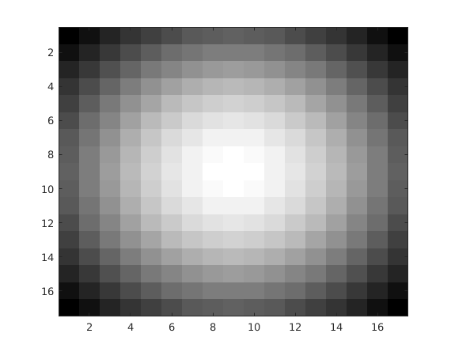

Q2. Bilateral Filtering
This function implements the fast bilateral filter, as suggested by Sylvian Paris. The standard deviation can be chosen to convenience. Dhruv Ilesh Shah, Bhavesh Thakkar and Dhanvi Sreenivasan
Contents
myBilateralFiltering.m
function im_new = myBilateralFiltering(img, std) % This function implements the Bilinear filter on "img" with the 3D gaussian % passed with the argument "std". % Scaling image in color space to 100 intensities imgs = img / max(max(img)) * 100; img_trunc = ceil(imgs); img_trunc = img_trunc + (img_trunc==0); space = zeros([size(img, 1), size(img, 2), max(max(img_trunc))]); void_space = zeros(size(space)); m = max(max(img_trunc)); for i = 1:size(img, 1) for j = 1:size(img, 2) space(i, j, img_trunc(i, j)) = img(i, j); void_space(i, j, img_trunc(i, j)) = m; end end % Simplest way, for now B = imgaussfilt3(space, std); B1 = imgaussfilt3(void_space, std); B = B ./ B1; im_new = zeros(size(img)); for i = 1:size(img, 1) for j = 1:size(img, 2) im_new(i, j) = B(i, j, img_trunc(i, j)); end end end
Results
im = load('../data/barbara.mat'); img = im.imageOrig; noise = randn(size(img, 1)) * 0.05 * max(max(img)); imgn = max(0, img+noise); % Generating noisy image std = [8, 8, 10]; % Values optimised for minimum RMSD im_new = myBilateralFiltering(imgn, std); figure('name', 'Bilateral Filtering on Barbara', 'Position', [100 100 1200 400]) colormap('gray'); subplot(1, 3, 1), imagesc(img) subplot(1, 3, 2), imagesc(imgn) subplot(1, 3, 3), imagesc(im_new)

The Kernel
The function uses Matlab's imgaussfilt3. To represent just the spatial gaussian for the optimal case, we have \sigma_s = 8. This gives the following spatial kernel.
h = fspecial('gaussian', [17 17], 8); figure, imagesc(h) colormap('gray')
Optimal Parameters
For the image given, with spatial dimensions 512x512 and image-space ranging from 0 to 100, the optimal parameters for BL filter were found to be \sigma_s = 8 and \sigma_r = 10. For this case, minimum RMSD was observed as given below.
disp(rmsd(im_new, img))
0.0390647
Comparing RMSD
For other points close to optimal point, the RMSE was found as:
{'\sigma_s','\sigma_r', 'RMSD';[7.2], [10], [0.0574]; [8.8],[10],[0.0637];[8],[9],[0.0561]; [8],[11],[0.068]}
ans =
'\sigma_s' '\sigma_r' 'RMSD'
[7.200000000000000] [ 10] [0.057400000000000]
[8.800000000000001] [ 10] [0.063700000000000]
[ 8] [ 9] [0.056100000000000]
[ 8] [ 11] [0.068000000000000]